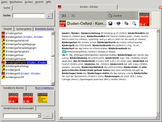
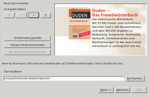
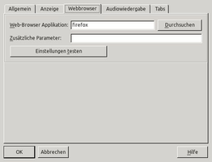

Duden-Bibliothek
Dieser Artikel wurde für die folgenden Ubuntu-Versionen getestet:
Dieser Artikel ist mit keiner aktuell unterstützten Ubuntu-Version getestet! Bitte diesen Artikel testen und das getestet-Tag entsprechend anpassen.
Hinweis:
Teile dieses Artikels, die sich ausschließlich auf die Duden-Bibliothek beziehen, wurden auch unter Ubuntu 16.04 Xenial Xerus getestet.
Zum Verständnis dieses Artikels sind folgende Seiten hilfreich:
Die Duden-Bibliothek (ehem. Office-Bibliothek) ist ein plattformübergreifendes Programm, das vielen elektronischen Nachschlagewerken (u.a. Brockhaus, Duden, Langenscheid und Meyer) zugrunde liegt. Es kann verschiedene digitale Nachschlagewerke anzeigen.
Die Software an sich ist Freeware, die einzelnen Wörterbücher müssen käuflich erworben werden.
|  |  |
| Duden-Bibliothek | Neues Buch installieren |
Installation¶
Die aktualisierte Software der Duden-Bibliothek wird auf der Herstellerseite zum Download 
 angeboten. Das .deb-Paket herunterladen und installieren [1].
angeboten. Das .deb-Paket herunterladen und installieren [1].
Nach der Installation findet man den Eintrag im Menü unter "Anwendungen -> Sonstiges -> Duden-Bibliothek". Alternativ kann es über den Befehl dudenbib gestartet [2] werden.
Problembehandlung unter Ubuntu 16.04¶
Die aktuelle Version 6.1 der Duden-Bibliothek (64 bit) (Stand Februar 2017) lässt sich unter Ubuntu 16.04 problemlos installieren. Es kann aber vorkommen, dass sich das Programm anschließend nicht starten lässt. Beim Versuch, die Duden-Bibliothek über das Terminal zu starten, erhält man folgende Fehlermeldung:
/opt/dudenbibliothek6/dudenbib.sh /opt/dudenbibliothek6/dudenbib.bin: error while loading shared libraries: libgstapp-0.10.so.0: cannot open shared object file: No such file or directory
Abhilfe schafft die Installation des folgenden Pakets:
libgstreamer-plugins-base0.10-0
 mit apturl
mit apturl
Paketliste zum Kopieren:
sudo apt-get install libgstreamer-plugins-base0.10-0
sudo aptitude install libgstreamer-plugins-base0.10-0
Duden-Bibliothek 6.1 sollte nun problemlos starten.
Bedienung¶
Ein ausführliches Handbuch findet man im Installationsordner des Programms. Im Folgenden werden lediglich einige Grundfunktionen zur Bedienung und Konfiguration aufgezeigt.
Buch installieren¶
Im Programmfenster die Schaltfläche "Buch installieren" anwählen und im sich öffnenden Fenster über "Durchsuchen…" die Installationsdatei pc_bib.inf oder pc-bib.inf auf dem Medium auswählen und über "Weiter" fortfahren. Nachdem man über "Annehmen" den Lizenzvereinbarungen zugestimmt hat wird das Produkt auf dem Computer installiert.
Hinweis:
Die Schreibweise der Installationsdatei kann variieren.
Buch deinstallieren¶
Um ein Lexikon aus dem Bestand zu entfernen startet man über "Datei -> Buch entfernen..." den entsprechenden Dialog. Durch einen  Linksklick das Produkt auswählen und mit "Entfernen" wird es aus der Liste gelöscht. Sollen mehrere Bücher entfernt werden arbeitet man zusätzlich noch mit
Strg .
Linksklick das Produkt auswählen und mit "Entfernen" wird es aus der Liste gelöscht. Sollen mehrere Bücher entfernt werden arbeitet man zusätzlich noch mit
Strg .
Benutzerwörterbuch¶
Mit dem Programm können Benutzerwörterbücher angelegt und mit der Import-/Exportfunktion ausgetauscht werden. Ein Wörterbuch legt man üner "Datei -> Neu... -> Benutzerwörterbuch..." an. Nach Vergabe des Titels wird dies unter den installierten Büchern angezeigt. Mit "Datei -> Neu... -> Eintrag..." kann dies mit Informationen gefüttert werden.
Mit "Datei -> Exportieren... -> Benutzerwörterbuch" bzw. "Datei -> Importieren... -> Benutzerwörterbuch" können die Daten verteilt werden z.B. für ein Linux-Lexikon.
|  |
| Einstellungen |
Konfiguration¶
Über "Ansicht -> Einstellungen..." gelangt man zum Einstellungsmenü. Hier können neben allgemeinen Einstellungen zum Verhalten die Schriftart, Schriftgröße, der verwendete Brwoser und das Programm zur Audiowiedergabe angepasst werden.
GNOME¶
Da es sich um ein Qt-Programm handelt, passt die Duden-Bibliothek optisch nicht so gut ins Bild der GNOME-Desktopumgebung. Abhilfe schaffen Lösungen aus dem Artikel KDE Anwendungen unter GNOME. Außerdem ist es hilfreich, unter "Ansicht -> Einstellungen -> Anzeige" die Schriftarten etwas zu vergrößern.
Problemlösungen¶
Stichwortsuche¶
Die Stichwortsuche der Duden-Bibliothek bringt ein etwas merkwürdiges Verhalten mit sich. In vielen Fällen führt die Suche nicht direkt zum gewünschten Begriff, sondern löst eine erneute Volltextsuche aus. Der erste Treffer dieser Volltextsuche wird anschließend automatisch geöffnet. Oft jedoch handelt es sich hierbei nicht um das gewünschte Stichwort. Es muss erneut unter den Ergebnissen der gesuchte Begriff ausgewählt werden. Um dieses Verhalten zu ändern mus in der Konfigurationsdatei ~/.config/BDNM/office-bibliothek.ini der Eintrag
DefaultOptions\ImplicitMaxIncremental=4
angepasst [3] werden.
Ersetzt man die 4 durch eine zweistellige Zahl (z.B. 40) erfolgt die Volltextsuche erst ab einer Eingabe von 40 Buchstaben und mehr. Die Suche über den Lupenbutton bleibt davon unberührt.
Duden Korrektor¶
Die Duden-Rechtschreibprüfung für OpenOffice und LibreOffice, Korrektor ist eine kommerzielle Rechtschreib-, Grammatik- und Worttrennungsprüfung für die Textverarbeitung Writer und eine Wortprüfung für die Tabellenkalkulation Calc und die Präsentationssoftware Impress. Zusätzlich enthalten ist das Nachschlagewerk Duden – Die deutsche Rechtschreibung.
Die aktuelle Version 8.0 ist bei Duden für 19,95€ als CD oder Download erhältlich.
Alternativ zur nachfolgenden Anleitung kann auch das Docker-Image ypid/libreoffice_duden verwendet werden.
Installation¶
Vorbereitung¶
Folgende Grundpakete (inkl. Abhängigkeiten) sowie das Paket für die verwendete Textverarbeitung sind Voraussetzung zur Installation des Korrektors [1]:
| Vorbereitung der Installation | ||
| Grundpakete | OpenOffice.org | Libre Office |
Paketliste zum Kopieren: sudo apt-get install openjdk-6-jre
sudo aptitude install openjdk-6-jre
|
Paketliste zum Kopieren: sudo apt-get install openoffice.org-java-common
sudo aptitude install openoffice.org-java-common
Paketliste zum Kopieren: sudo apt-get install openoffice-java-common
sudo aptitude install openoffice-java-common
|
Paketliste zum Kopieren: sudo apt-get install libreoffice.org-java-common
sudo aptitude install libreoffice.org-java-common
Paketliste zum Kopieren: sudo apt-get install libreoffice-java-common
sudo aptitude install libreoffice-java-common
|
Paketliste zum Kopieren: sudo apt-get install libstlport4.6-dev
sudo aptitude install libstlport4.6-dev
| ||
Installation der Duden-Rechtschreibprüfung¶
Die Duden-Rechtschreibprüfung wird als Erweiterung in OpenOffice eingebunden. Dazu startet man in OpenOffice unter "Extras" den "Extension Manager…". Hier wählt man über die "Hinzufügen…"-Schaltfläche die Datei duden-korrektor-openoffice.oxt aus, welche sich in dem Ordner linux auf dem Installationsmedium befindet.
Ist die Erweiterung installiert, muss die Textverarbeitung beendet und neu gestartet werden.
Nachbereitung¶
Nach der Installation der Duden-Rechtschreibprüfung muss man die alte Rechtschreibprüfung deaktivieren. Dazu öffnet man unter "Extras -> Optionen… -> Spracheinstellungen" das Menü "Linguistik" und deaktiviert unter "Verfügbare Sprachmodule" alle Einträge außer "Duden Korrektor" und "OpenOffice.org New Thesaurus".
Anschließend klickt man rechts daneben auf "Bearbeiten…". Hier muss unter "Rechtschreibung", "Grammatik" und "Silbentrennung" der "Duden Korrektor" und unter Thesaurus "OpenOffice.org New Thesaurus" ausgewählt sein - alle anderen Einträge bleiben deaktiviert.
64-Bit-System¶
Bei der Installation der Duden-Rechtschreibprüfung auf einem 64-Bit-System erhält man die Fehlermeldung Die Extension "Duden Korrektor" ist auf diesem Computer nicht lauffähig.
Achtung!
 Die Duden-Rechtschreibprüfung 8.0 funktioniert somit unter einem 64-Bit-System noch nicht nativ! Durch Installation der 32-bit-Version von Libreoffice funktioniert die Rechtschreibprüfung aber auch unter einem 64-bit-System. Installationsanleitungen findet sich unter Duden Korrektor 8.0 für OpenOffice und LibreOffice, Duden Korrektor 8 unter Ubuntu 64-bit und Duden Korrektor unter 64-Bit
Die Duden-Rechtschreibprüfung 8.0 funktioniert somit unter einem 64-Bit-System noch nicht nativ! Durch Installation der 32-bit-Version von Libreoffice funktioniert die Rechtschreibprüfung aber auch unter einem 64-bit-System. Installationsanleitungen findet sich unter Duden Korrektor 8.0 für OpenOffice und LibreOffice, Duden Korrektor 8 unter Ubuntu 64-bit und Duden Korrektor unter 64-Bit
Die Duden-Bibliothek sowie der Duden Korrektor lassen sich mit einem --force-architecture installieren und auch benutzen.
Hinweis:
Bei einigen "Büchern" kann es jedoch bei der Installation in die Duden-Bibliothek unter 64-Bit-Systemen zu Problemen kommen. Diese löst man, indem man alle Bücher, die man nutzen möchte, in einer Duden-Bibliothek auf einem 32-Bit-System installiert und anschließend den Ordner /opt/dudenbib/data/ des 32-Bit-Systems in das 64-Bit-System kopiert.
Fehlermeldungen mit Java¶
Beim Auftreten der folgenden Fehlermeldungen:
Could not create java implementation loader,
(com.sun.star.uno.RuntimeException) { { Message = "[JavaVirtualMachine]:An unexpected error occured while starting Java!", Context = (com.sun.star.uno.XInterface) @0 } }
oder wenn das Fehlen einer LuceneHelpWrapper.jar bemängelt wird,
sollte sichergestellt werden, dass alle unter Vorbereitung genannten Pakete installiert sind. Zudem sollte geprüft werden, welche Java-Version OpenOffice verwendet ("Extras -> Optionen -> Openoffice.org -> Java"). Hier muss ein Haken gesetzt und eine aktuelle Java-Version gewählt sein.
Wird keine Java-Version gelistet, kann das Löschen der Datei ~/.openoffice.org/3/user/config/javasettings_Linux_x86.xml Abhilfe schaffen (Quelle) .
Probleme¶
Wie bereits für ältere Versionen berichtet, verursacht die Funktion "Während der Eingabe prüfen" eine sehr hohe CPU Auslastung. Das lässt sich beheben wenn man, wie weiter oben beschrieben, eine aktuelle Java-Version manuell auswählt.
Handbücher¶
Die Handbücher zu den jeweiligen Nachschlagewerken sind auf den Installationsmedien im PDF-Format hinterlegt. Diese beschreiben ausführlich und anschaulich die einzelnen Funktionen.

Infobox¶
| DUDEN - Die Rechtschreibprüfung | |
| Genre: | Bildung |
| Sprache: | |
| Veröffentlichung: | 2012 (Korrektor 8.0) |
| Publisher: | Bibliographisches Institut GmbH |
| Systemvoraussetzungen: | - |
| Medien: | DVD (1) |
| Strichcode / EAN / GTIN: | 9783411112845 |
| Läuft mit: | nativ |
- Erstellt mit Inyoka
-
 2004 – 2017 ubuntuusers.de • Einige Rechte vorbehalten
2004 – 2017 ubuntuusers.de • Einige Rechte vorbehalten
Lizenz • Kontakt • Datenschutz • Impressum • Serverstatus -
Serverhousing gespendet von